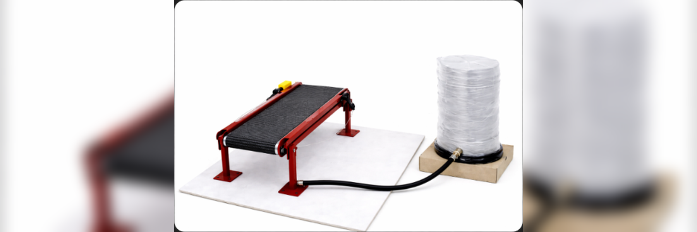

Project
Design and program an automated conveyor belt system with industrial control functions.
A small-scale conveyor belt was built using basic materials and electromechanical integration. The system was programmed using ladder logic to control start, stop, actuator activation, emergency stop, and operational light signaling. The system demonstrated functional operation by transporting and filling a glass using a motorized mechanism.
Construction of the physical system, programming of the logic control, and functional testing.
A functional conveyor belt with different actions to control its stable operation was built.